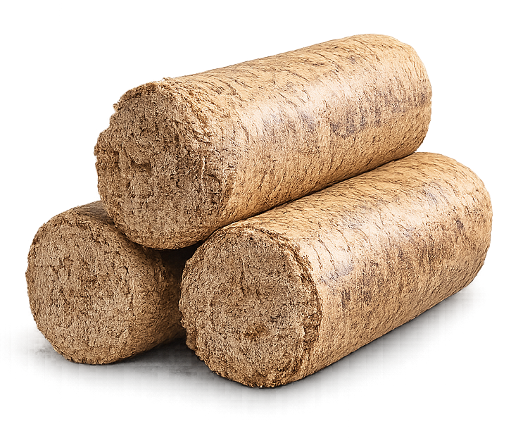

High-Density Biomass Briquettes
OJAS Biomass Briquettes are manufactured by compressing organic agricultural waste under extreme pressure without the use of chemical binders. This process creates dense, solid blocks ("white coal") that offer superior burning characteristics, making them the ideal drop-in replacement for traditional coal in industrial boilers and brick kilns.
Technical Highlights:
- High Calorific Value: Yields more energy per kilogram than raw biomass.
- Low Ash Content: Leaves minimal residue, reducing boiler cleaning frequency.
- Low Moisture: Ensures immediate ignition and consistent thermal efficiency.
- Easy Storage: Uniform cylindrical shape allows for efficient stacking and transport.